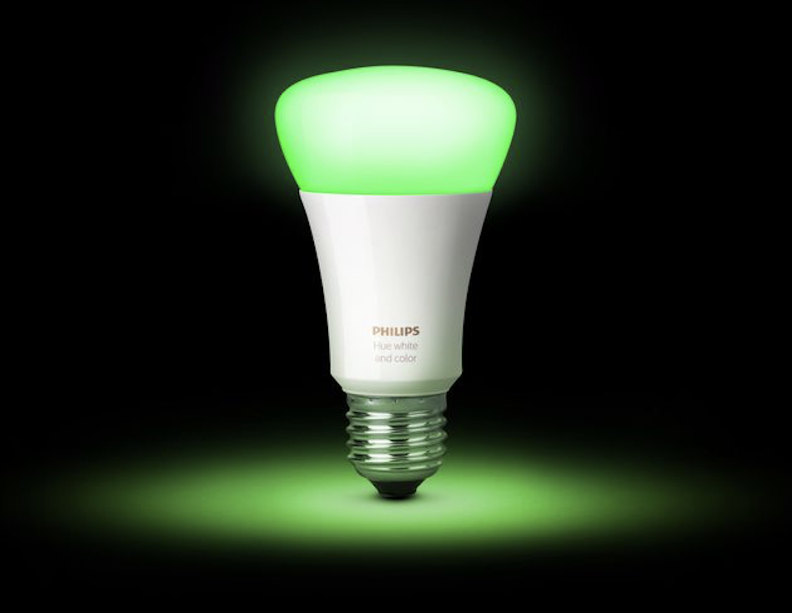
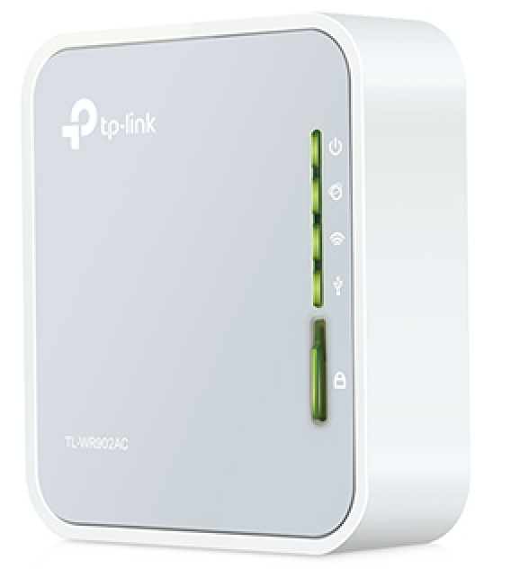
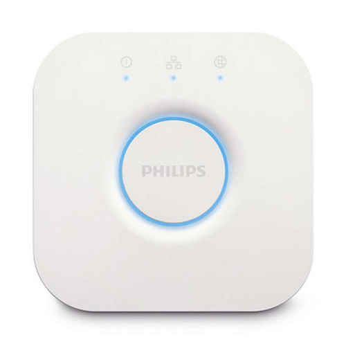
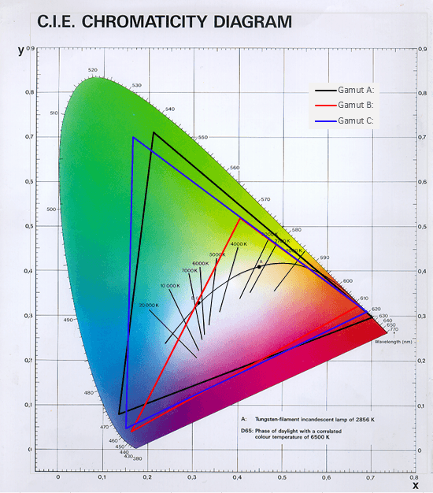

Welcome to the last class! As you know we have spent the semester learning to program in Python by using it to process data. This data processing has involved both reading and writing information using data and control structures which allow us to interact with data representations like text, CSV and JSON. We’ve often used these programs to generate new insight about data such as the UMD TerpFootprints data.

The objective of this last exercise is to get a feel for how data processing can (and always does) change things in the world. In this case we’ll just be changing a small thing (the color of some light bulbs) in the hopes that it gives you the sense of how computation isn’t an immaterial, abstract phenomenon, but one that has very real material effects, often with political and social consequences.
Using our knowledge of basic data types, JSON and writing data to the web (which we haven’t talked a whole lot about yet) we are going to change the color of some [Phillips Hue Lights]. You can talk to these lights using the HyperText Transfer Protocol (HTTP) which is the protocol that makes the web possible. Each of three lights in the room is listening on a local wifi network.
The goal of this exercise is to see if you can change the color of one or more of the Phillips Hue lights that are in the room. See if you can do one or more of the following things:
Here are some preliminary things for you to get started…
[requests] is a Python module that makes it easy to send HTTP requests. Once you install it you’ll be able to import it into your program just like we installed and imported pandas. Open a terminal window and type the command appropriate for your operating system:
OS X:
pip3 install requestsWindows:
py -m pip install requestsYou will be using requests to send HTTP requests to the lights. So open up the [Requests Quickstart] in a browser tab for you to look at while you are doing your work:
https://2.python-requests.org/en/master/user/quickstart/
You need to talk to the Phillips Hue Lights using your computer’s network connection. However the UMD Wi-Fi network is fairly tightly controlled, so it’s not easy to quickly put the Phillips Hue lights on the UMD network by simply plugging them in. To get around this I’ve used a [tp-link] portable travel router to create a local wi-fi network that you can join.
Network: TP-Link_1B36
Password: 76281273

There are three Phillips Hue lights in the room that you can talk to using the Hue Lights API. The API is a little web server running on this device
http://192.168.0.101/api/{key}/So for example you can see the state of all the lights by visiting this URL in your browser:
http://192.168.0.101/api/ht4E04Dq3umptpRXiHqZLFzEBiJcJhypKWBxWT81/lightsYou can see the state of one of the lights by adding the light number (1, 2 or 3) to the URL, for example:
http://192.168.0.101/api/ht4E04Dq3umptpRXiHqZLFzEBiJcJhypKWBxWT81/lights/1
http://192.168.0.101/api/ht4E04Dq3umptpRXiHqZLFzEBiJcJhypKWBxWT81/lights/2
http://192.168.0.101/api/ht4E04Dq3umptpRXiHqZLFzEBiJcJhypKWBxWT81/lights/3You can change the state of one of the lights by doing an HTTP PUT of some JSON data to a URL like:
http://192.168.0.101/api/ht4E04Dq3umptpRXiHqZLFzEBiJcJhypKWBxWT81/lights/2/stateThe requests module has a put() method that lets you send data to a URL. You can use put method’s json parameter to pass in data to send as JSON. See if you can post this Python dictionary as JSON to turn on and off a light:
{"on": False}or:
{"on": True}The lights use a particular type of codes for color. You can update the color by sending a PUT request to the light’s state URL, just as you did to turn them off and on, but the dictionary you send as JSON should look like this to turn the color red:
{"xy": [.6, .3]}Or green:
{"xy": [.4, .5]}Try to come up with other colors by putting different “xy” values by identifying colors by their [x, y] coordinates in the Red Triangle (Gamut B) below:

Experiment with the bri option which can be an integer from 0 to 255. What does it seem to do?
[Phillips Hue Lights]: https://www2.meethue.com/en-us/bulbs [requests]: https://2.python-requests.org/en/master/ [Requests Quickstart]: https://2.python-requests.org/en/master/user/quickstart/ [tp-link]: https://www.tp-link.com/us/home-networking/wifi-router/tl-wr902ac/